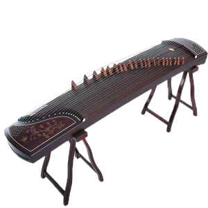
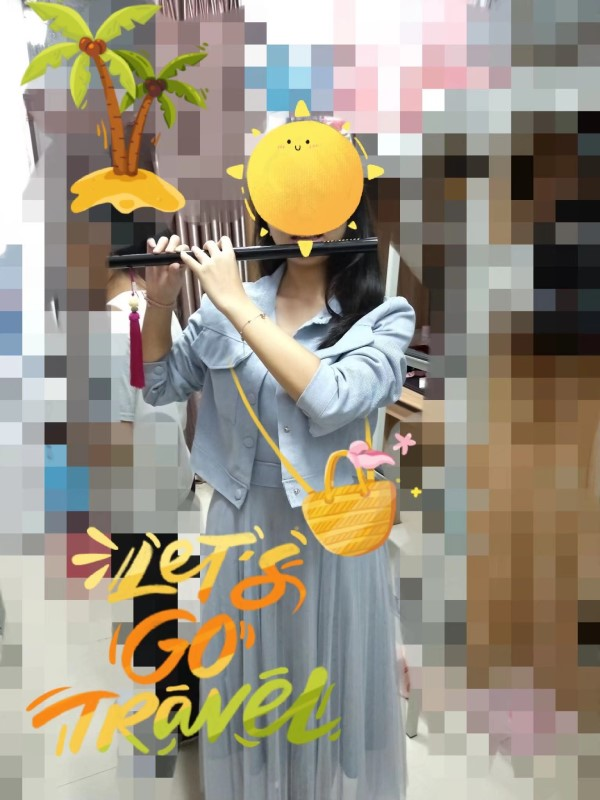

丹丹小可爱平时兴趣爱好繁多（主要是某段时间看着什么电视剧就有一个爱好），看看你有没有跟我一样的爱好吧
NO.1
丹丹平时不喜欢打游戏、追剧，喜欢有空时弹弹琴。如果你也喜欢弹琴，我们一起交流分享吧！


NO.2
丹丹在看了陈情令之后爱上了《无羁》这首歌，觉得这首歌用笛子吹奏出来好棒（其实是吹奏的人是肖战吸引了我（*/∇＼*）），自己就去买了一根笛子。
NO.3
丹丹很喜欢听歌（我喜欢的歌有一个专门的分享）。除了喜欢听歌，丹丹还喜欢唱歌。就算是辣耳朵也喜欢唱（反正也不是辣我的耳朵（*/∇＼*））